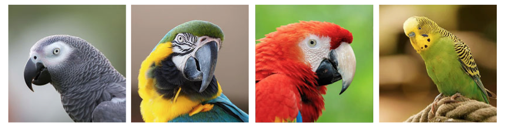
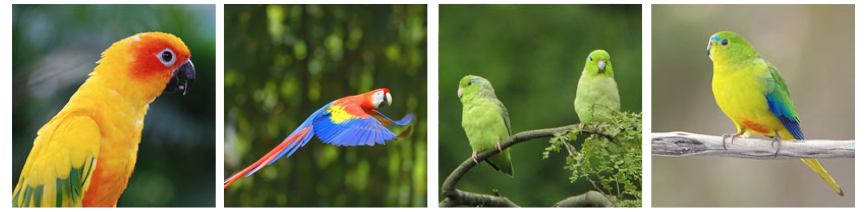
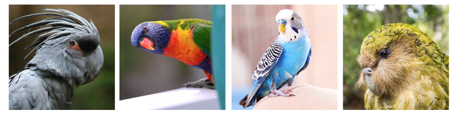

Using CRESS-GLUE - an example-driven tutorial
This tutorial focuses on beak and feather disease virus and comprises the following steps:
- Downloading selected virus sequences from GenBank.
- Linking virus sequences with other data and extracting isolate data from GenBank files.
- Filtering sequence data to obtain a valid analysis set.
- Defining virus reference sequences and associating them with annotations.
- Standardising sequence orientation and constructing in-frame alignments.
- Mapping feature coverage of sequence members within an alignment.
- Examining genetic variation in protein-coding genes.
- Reconstructing phylogenetic trees: bootstrapped, rooted, and annotated.
- Using GLUE projects as a basis for collaborative research and resource development.
If you haven't decided yet whether or not you want to use GLUE, you may find it useful to browse through this tutorial - it should provide some insight into what GLUE offers and the kind of things that can be done with GLUE projects.
If you've already committed to using GLUE, you may find it useful to also explore the GLUE example project when following this tutorial.
Background - beak and feather disease virus, a pathogenic circovirus

Psittacine birds (parrots and cockatoos) are among the most beautiful and remarkable creatures on the planet. Unfortunately, many of these wonderful species are presently endangered, and conservation efforts have been hampered by the emergence of psittacine beak and feather disease (PBFD).
PBFD is caused by a circovirus called beak and feather disease virus (BFDV). BFDV is a member of genus Circovirus, in the family Circoviridae. The circoviruses form part of a broader assemblage of evolutionarily-related CRESS DNA viruses.
Genomic approaches have great potential to help control the spread of BFDV. In this tutorial we will use the CRESS-GLUE project to (i) investigate BFDV distribution diversity and evolution, and (ii) establish a sequence-based resource for BFDV.
1. Downloading all available BFDV sequences from GenBank
To download all BFDV entries in NCBI GenBank, we will use a customised version of GLUE's module 'ncbiImporter' module. Our project-specific configuration of the module can be viewed here. Viewing the file, you can probably see that it is configured to download sequences based on a query phrase:
"Beak and feather disease virus"[Organism] AND 200:2000[SLEN]
This 'eSearchTerm' is a standard NCBI entrez text query that specifies all GenBank entries labelled "beak and feather disease" in the 'Organism' field and between 200-2000 nucleotides (nt) in length.
To use the module, first initiate GLUE on the command line as follows:
MyComputer:CRESS-GLUE rob$ gluetools.sh
GLUE Version 1.1.103
Copyright (C) 2015-2020 The University of Glasgow
This program comes with ABSOLUTELY NO WARRANTY. This is free software, and you
are welcome to redistribute it under certain conditions. For details see
GNU Affero General Public License v3: http://www.gnu.org/licenses/
Mode path: /
GLUE>
Notice from the first line that I'm in the 'CRESS-GLUE' directory when
I initiate GLUE.
This means that, by default, it will be my 'working directory' - i.e. when I reference
a file from the GLUE console, I'll need to do so relative to this directory.
Next, navigate to the 'cress' project as shown here:
GLUE> project cress
OK
Mode path: /project/cress/
Now create the module using it's configuration file (which is contained in the CRESS-GLUE project) as shown here:
Mode path: /project/cress/
GLUE> create module -f modules/genus/circo/circoviridaeNcbiImporterBfdv.xml
OK
(1 Module created)
To run the module, execute the following command in the GLUE shell:
Mode path: /project/cress/
GLUE> module circoviridaeNcbiImporterBfdv import
When I ran this command on the 1st December 2020, I obtained the following output:
ncbiImporterSummaryResult
totalMatching: 1250
present: 0
surplus: 0
missing: 1250
deleted: 0
downloaded: 1250
Since the GenBank database is continually expanding, you may find
that you obtain more sequences than this when running the same
command at a later date.
Now export the sequences to a 'source' directory as follows.
Mode path: /project/cress
GLUE> export source ncbi-curated-circo-bfdv -p sources/
The
sequences
should now be in your local copy of the CRESS-GLUE project
(under 'sources/ncbi-curated-circo').
However, they are in GenBank's native XML format - not
particularly convenient for human use - so how do we
get our hands on the FASTA versions of these sequences?
GLUE has been designed to provide as much flexibility as possible with respect to data-formatting. To export FASTA-formatted sequences from GLUE, use a 'fastaExporter' module.
As with many of GLUE's core module types, a version with a default configuration can be created on the GLUE command line using the '-t' (template) option:
Mode path: /project/cress
GLUE> create module -t fastaExporter
OK
(1 Module created)
Now lets use this module to export the sequences in the 'ncbi-curated-circo-bfdv' source. Heres my first attempt:
Mode path: /project/cress
GLUE> module fastaExporter export -w "source.name = 'ncbi-curated-circo-bfdv'"
Error: Usage error
Usage: export (-w <whereClause> | -a) [-o <offset> -b <batchSize>] [-y <lineFeedStyle>]
[-r] [-t] (-p | -f <fileName>)
Options:
-y <lineFeedStyle>, --lineFeedStyle <lineFeedStyle> LF or CRLF
-f <fileName>, --fileName <fileName> FASTA file
-w <whereClause>, --whereClause <whereClause> Qualify exported sequences
-o <offset>, --offset <offset> Paged query offset
-b <batchSize>, --batchSize <atchSize> Paged query batch size
-a, --allSequences Export all project sequences
-r, --suppressReverseComplement Suppress reverse complement
-t, --suppressRotation Suppress rotation
-p, --preview
Oops - something went wrong! - the module needs another argument.
Note that the error message prompts with the correct usage of the module, and an explanation of the options. In this case, I forgot to tell GLUE what to do with the sequences. They can be previewed in the console, or exported to a file. Run the module as follows to export the sequences to a file named 'bfdv.fna':
Mode path: /project/cress
GLUE> module fastaExporter export -w "source.name = 'ncbi-curated-circo-bfdv'" -f bfdv.fna
OK
You can check how to use any of the commands associated with a GLUEs module by using the 'help' option.
Mode path: /project/cress
GLUE> module fastaExporter help export

2. Importing BFDV sequences and metadata from GenBank files.
Now that we've downloaded a set of BFDV sequences, we can incorporate them into the CRESS-GLUE project. Load the sequences as follows:
Mode path: /project/cress
GLUE> import source sources/ncbi-curated-circo-bfdv/
Once loaded, the sequences can be viewed in the project using the 'list sequence' command:
Mode path: /project/cress
GLUE> list sequence sequenceID source.name family genus -w "source.name = 'ncbi-curated-circo-bfdv'"
+============+=========================+=========+=========+
| sequenceID | source.name | family | genus |
+============+=========================+=========+=========+
| AB182568 | ncbi-curated-circo-bfdv | - | - |
| AB182569 | ncbi-curated-circo-bfdv | - | - |
| AB182570 | ncbi-curated-circo-bfdv | - | - |
| AB182571 | ncbi-curated-circo-bfdv | - | - |
| AB182572 | ncbi-curated-circo-bfdv | - | - |
Only the first few rows of the result table are shown here -
note that the family and genus fields are empty, reflecting the fact that we
have yet to link these sequences to their associated 'side-data'.
In CRESS-GLUE, sequence-associated side-data includes (i) taxonomic data and
(ii) isolate-specific information, for each sequence.
The database fields associated with these side data are defined in CRESS-GLUE's project-specific schema extensions.
All BFDV sequences have identical taxonomic information down to species level. An efficient way to input the taxonomic data for each sequence is to use this script. The script comprises a single loop, and 'wraps' two GLUE commands. The first command lists all the sequences in our BFDV-specific source directory. Next we step through this list of sequences, and use GLUE's 'set' command to setting the appropriate values in taxonomic data fields in the corresponding table row.
Run the script as follows:
Mode path: /project/cress
GLUE> run script glue/genus/circo/exampleLoadSequenceDataBfdv.js
Inspect data in the sequence table via the command line:
Mode path: /project/cress
GLUE> list sequence sequenceID name full_name family genus clade
+============+===============+================+==================+==============+
| sequenceID | name | family | genus | clade |
+============+===============+================+==================+==============+
| AB182568 | BFDV | Circoviridae | Circovirus | Avian-1 |
| AB182569 | BFDV | Circoviridae | Circovirus | Avian-1 |
| AB182570 | BFDV | Circoviridae | Circovirus | Avian-1 |
| AB182571 | BFDV | Circoviridae | Circovirus | Avian-1 |
| AB182572 | BFDV | Circoviridae | Circovirus | Avian-1 |
Next, we will extract BFDV isolate information from GenBank files. First, we need to link each new BFDV sequence to the 'isolate table'. To do this, we'll use this script.
Mode path: /project/cress
GLUE> run script glue/genus/circo/exampleLoadIsolateDataBfdv.js
GLUE's 'genbankPopulator' module can be used to extract sequence and isolate information from GenBank files. Next, we will use a customised version of this module to We can use this module to search for for host species, time and place of isolation, and isolate data in the "notes" section of the GenBank XML.
Mode path: /project/cress
GLUE> run script glue/genus/circo/exampleLoadIsolateDataBfdv.js
Inspect data in the isolate table via the command line. This time using a 'where clause' to limit the query to Japanese isolates only:
Mode path: /project/cress
GLUE> list custom-table-row isolate id isolate_id country -w "country = 'Japan'"
+==========+============+=========+
| id | isolate | country |
+==========+============+=========+
| AB277726 | AGP-SA1P-1 | Japan |
| AB277727 | AGP-SA1P-2 | Japan |
| AB277728 | AGP-SA1P-3 | Japan |
| AB277729 | AGP-SA1P-4 | Japan |
| AB277730 | AGP-SA1P-5 | Japan |
Executing the query above without a where clause will show that not every sequence has complete information for each field in the isolate table. This is because typically, some GenBank entries for any given virus lack this information.
3. Filtering data to obtain a valid analysis data set.
Investigating the data in the sequence table reveals that some of the BFDV sequences are not associated with isolate data. This means that our genbankXmlPopulator module didn't find the information in the XML file for that sequence. Such inconsistent annotation of virus entries in GenBank is fairly commonplace, due to a lack of standards.
It's often possible to fill in missing values via reference to an associated manuscript. In this section I'll show how to use GLUE to coordinate this process.
First, let's export the existing isolate table data for sequence in our source. This is a three step process:
Mode path: /project/cress
GLUE> console set cmd-output-file-format tab
OK
Mode path: /project/cress
GLUE> console set next-cmd-output-file bfdv-data.tsv
OK
Mode path: /project/cress
GLUE> list sequence sequenceID isolate.isolate_id isolate.country isolate.host_sci_name isolate.collection_year -w "source.name = 'ncbi-curated-circo-bfdv'"
OK
Data will be displayed in the console, and also exported to the file 'bfdv-data.tsv'.
Take a look at the first few rows of data:
+============+========================+========================+=========================+
| sequenceID | isolate.isolate_id | isolate.country | isolate.host_sci_name |
+============+========================+========================+=========================+
| AB182568 |YCC-IN1P |- |- |
| AB182569 |YCC-IN2P |- |- |
| AB182570 |RRP-JP11P |- |- |
| AB182571 |RRP-JP12P |- |- |
| AB182572 |BTP-SA11P |- |- |
| AB182573 |RL-JP1P |- |- |
| AB277726 |AGP-SA1P-1 |Japan |Psittacus erithacus |
The first five sequences, which are all from the same study, have isolate IDs,
but are missing information about the country of isolation and the host species.
Checking the GenBank files - e.g. this one for sequence
AB182568,
confirms that the information is not contained within the GenBank entry.
However, the openly-accessible manuscript, associated with these sequences includes a table (Table 1) that contains the missing information
The next few steps will demonstrate how we can improve on the annotations in GenBank by supplementing missing information.
This file shows the kind of template we will use for doing this.
Use this script to upload the refined data.
4. Refining the BFDV reference sequence.
The 'Circovirus' extension of CRESS-GLUE includes reference sequences for most (if not all) species, including BFDV. The reference sequence declarations can be found in this file.
However, in a project focussed specifically on BFDV, we may want to annotate the BFDV more richly than it is presently annotated within the 'circovirus' component of CRESS-GLUE. In fact, it makes sense to incorporate everything that is known about the BFDV genome.
Let's examine how we can modify the existing BFDV reference sequence. First, let's have a look at the reference sequences in the cress project. On way to do this is to use the tab complete function of the console to reveal the full list of reference sequences, by first typing 'reference (or just the first few letters of this word), and then pressing the 'tab' key, as shown here:
Mode path: /project/cress
GLUE> reference REF_
REF_Begomo_EACMKV REF_CRESS1_MASTER_AHEaCV-13 REF_CRESS2_MASTER_Po-41
REF_Circo_BFDV REF_Circo_BarbCV REF_Circo_CaCV
REF_Circo_CfCV REF_Circo_CoCV REF_Circo_DuCV
REF_Circo_FiCV REF_Circo_GuCV REF_Circo_MASTER_PCV-1
REF_Circo_MiCV REF_Circo_PCV-2 REF_Circo_PCV-3
REF_Circo_RaCV REF_Circo_SgCV REF_Circo_StCV
REF_Circo_SvCV REF_Circo_SwCV REF_Circo_TbCV
REF_Circo_ZfCV REF_Cyclo_MASTER_HuACyV-1 REF_Porprismaco_MASTER_CBSV
REF_Redondo_MASTER_HLVV
As expected, we see the master references of the core project, plus the references associated with the Circovirus extension. To investigate further, navigate to the BFDV reference sequence and list all the features that are presently associated with this reference, as follows:
Mode path: /project/cress
GLUE> reference REF_Circo_BFDV
OK
Mode path: /project/cress/reference/REF_Circo_BFDV
GLUE> list feature-location
+========================+==============+
| referenceSequence.name | feature.name |
+========================+==============+
| REF_Circo_BFDV | whole_genome |
| REF_Circo_BFDV | Rep |
| REF_Circo_BFDV | Cap |
+========================+==============+
FeatureLocations found: 4
The reference has the locations of major genome features mapped - specifically the rep and cap genes. Inspecting the BFDV GenBank entry shows that includes annotation for an additional, hypothetical open reading frame (ORF) called "V2".
Let's modify the existing BFDV reference ssequence to include V2. First, lets examine all of the features defined in the entire CRESS-GLUE project.
GLUE> project-mode
OK
Mode path: /project/cress
GLUE> list feature
+==============+==============+===================================+
| name | parent.name | description |
+==============+==============+===================================+
| whole_genome | - | Whole genome |
| 5flank | - | 5 prime genomic flanking sequence |
| 3flank | - | 3 prime genomic flanking sequence |
| Rep | whole_genome | Replicase protein |
| ORFV2 | whole_genome | Hypothetical protein ORFV2 |
| ORFC2 | whole_genome | Hypothetical protein ORFC2 |
| ORF4 | whole_genome | Hypothetical protein ORF4 |
| ORF3 | whole_genome | Hypothetical protein ORF3 |
| nonanuc | whole_genome | nonanucleotide motif |
| intergenic | whole_genome | intergenic region |
| gp3 | whole_genome | gp3 protein |
| gp2 | whole_genome | gp2 protein |
| Cap | whole_genome | Capsid protein |
| 5UTR | whole_genome | 5' UTR |
| 3UTR | whole_genome | 5' 3TR |
+==============+==============+===================================+
Features found: 15
First let's create a protein-coding genome feature called V2, as follows:
Mode path: /project/cress
GLUE> create feature v2 "v2 gene"
OK
(1 Feature created)
GLUE> feature v2 set metatag CODES_AMINO_ACIDS true
OK
Mode path: /project/cress/
GLUE> feature v2 set metatag OWN_CODON_NUMBERING true
OK
Now lets associate this feature with a location in the BFDV genome. The first step is to create the feature location in the BFDV reference sequence:
Mode path: /project/cress
GLUE> reference REF_Circo_BFDV add feature-location v2
OK
(1 FeatureLocation created)
Now we need to associate the feature location with the appropriate region of the BFDV genome, as follows:
GLUE> reference REF_Circo_BFDV feature-location v2 add segment 550 1026
OK
(1 FeatureSegment created)
The coordinates (550-1026) are derived from the GenBank entry for our BFDV reference sequence.
As always, the same result can be accomplished by running a file that contains the GLUE commands, as follows:
Mode path: /project/cress
GLUE> run file glue/genus/circo/exampleSetFeatureLocationsBfdv.glue

5. Creating an alignment of all BFDV sequences.
Now we have put together the fundamental data items we can begin working on some proper comparative analysis. In the next few steps we will use everything we've created so far to start investigating the genetic diversity of BFDV in relation to it's biology.
Most comparative studies of virus genomes require the creation of a multiple sequence alignment containing the sequences under investigation.
Large set of sequences derived from a single virus species can be efficiently aligned to one another using a pairwise, reference-guided approach. The GLUE framework allows this approach to be used in a codon-aware way, and without data loss.
At this point, I should mention that some BFDV sequences are in the opposite orientation to our chosen BFDV reference. To address this, run this GLUE file which will effectively tell the project which sequences need to be reverse complemented before they are aligned. This will allow us to proceed directly to the alignment step with all sequences in the same orientation. Later in this section, I'll explain how I created the file.
run file glue/genus/circo/exampleApplyReverseComplement.glue
To create an alignment, first, exit the reference sequence to project level (assuming you are still in this mode path), as follows:
Mode path: /project/cress/reference/REF_Circo_BFDV
GLUE> project-mode
OK
Mode path: /project/cress
GLUE>
Before we perform the alignment construction, we need to first create a constrained alignment object and specify which sequences belong in it, as shown here:
Mode path: /project/cress
GLUE> create alignment AL_BFDV -r REF_Circo_BFDV
OK
Mode path: /project/cress
GLUE> alignment AL_BFDV add member --whereClause "source.name = 'ncbi-curated-circo-bfdv'"
OK
Now we can construct the alignment. The CRESS-GLUE project contains a circovirus-specific configuration file for GLUE's 'compoundAligner' module.
compute alignment AL_BFDV circovirusCompoundAligner
Now let's inspect the resulting alignment. One way is to use the 'show statistics' command. This will produce a table as shown below (note that only the first few table rows are shown here):
GLUE> alignment AL_BFDV show statistics
+=========================+=====================+============================+=========================+==========+==========+=============+=============+
| sequence.source.name | sequence.sequenceID | referenceNtCoveragePercent | memberNtCoveragePercent | minRefNt | maxRefNt | minMemberNt | maxMemberNt |
+=========================+=====================+============================+=========================+==========+==========+=============+=============+
| ncbi-curated-circo-bfdv | AB182568 | 22.277972905168088 | 99.32885906040268 | 1402 | 1845 | 3 | 446 |
| ncbi-curated-circo-bfdv | AB182569 | 22.277972905168088 | 99.32885906040268 | 1402 | 1845 | 3 | 446 |
| ncbi-curated-circo-bfdv | AB182570 | 22.37832413447065 | 99.77628635346755 | 1400 | 1845 | 1 | 446 |
| ncbi-curated-circo-bfdv | AB182571 | 22.37832413447065 | 99.77628635346755 | 1400 | 1845 | 1 | 446 |
| ncbi-curated-circo-bfdv | AB182572 | 22.37832413447065 | 99.77628635346755 | 1400 | 1845 | 1 | 446 |
Or alternatively, list alignment members, along with their associated data, like this:
GLUE> alignment AL_BFDV
OK
Mode path: /project/cress/alignment/AL_BFDV
GLUE> list member sequence.sequenceID sequence.name sequence.isolate.isolate_id
+=====================+===============+====================================+
| sequence.sequenceID | sequence.name | sequence.isolate.isolate_id |
+=====================+===============+====================================+
| AB182568 | BFDV | YCC-IN1P |
| AB182569 | BFDV | YCC-IN2P |
| AB182570 | BFDV | RRP-JP11P |
| AB182571 | BFDV | RRP-JP12P |
| AB182572 | BFDV | BTP-SA11P |
(only the first few results are shown here)
So, how did I figure out which sequences needed to be reverse-complemented? There are lots of ways to do this using GLUE. In this case I used a fairly unsophisticated, two-step approach - but one that seemed to work quite well.
First, I naively aligned all BFDV sequences without reverse complementing any of them, then I inspected the alignment in the console<.
Since we had excluded sequences shorter than 200bp when we downloaded from BFDV sequences GenBank (see above), it was a reasonable guess that any sequences for which the only aligned segments were drastically shorter than this length were in reverse orientation relative to the reference.
Additionally, since (i) the orientation of viral sequences is usually consistent within a study, and (ii) sequences from the same study are usually numbered sequentially (e.g. AB182568-AB182573), it wasn't too demanding to create a list of BFDV sequences suspected to require reverse complementation.
The alignment can be exported using a fastaAlignmentExporter module, as shown here:
Mode path: /project/cress
GLUE> create module -t fastaAlignmentExporter
OK
(1 Module created)
Mode path: /project/cress
GLUE> module fastaAlignmentExporter
OK
Mode path: /project/cress/module/fastaAlignmentExporter
GLUE> export AL_BFDV -r REF_Circo_BFDV -f v2 -a -e -o v2.aln.fna
OK
The entire alignment can be exported, or the reference sequence can be used to export specific alignment sections. In the example shown above I've exported the alignment section corresponding to the v2 gene to a file called 'v2.aln.fna'. The '-e' option tells GLUE to exclude any sequences that have no coverage in the v2 gene.
6. Mapping feature coverage in BFDV sequences.
Now that we have created an alignment of BFDV sequences that is constrained to the BFDV reference sequence, we can use this alignment in combination with GLUE's 'featurePresenceRecorder' module to examine feature coverage within individual BFDV sequences.
Mode path: /project/cress
GLUE> create module -f modules/genus/circo/circoFeaturePresenceRecorder.xml
OK
(1 Module created)
Mode path: /project/cress
GLUE> module circoFeaturePresenceRecorder
OK
Mode path: /project/cress/module/circoFeaturePresenceRecorder
GLUE> record feature-presence AL_BFDV -r -f whole_genome -d
This can also be accomplished by running a file containing these commands, as follows:
Mode path: /project/cress
GLUE> run file glue/genus/circo/exampleRecordFeaturePresenceBfdv.glue
OK
7. Examining genetic variation.
To examine genetic variation within a protein coding genome features of the BFDV genome, we can use our constrained alignment of BFDV sequences, and GLUE's 'amino acid frequency' command. The command produces a table report of amino acid variation within coding features, as in the following example:
Mode path: /project/cress
GLUE> alignment AL_BFDV amino-acid frequency -r REF_Circo_BFDV -f Rep -l 100 105
+=========+=======+===========+============+=====================+
| feature | codon | aminoAcid | numMembers | pctMembers |
+=========+=======+===========+============+=====================+
| Rep | 100 | C | 940 | 99.89373007438894 |
| Rep | 100 | W | 1 | 0.10626992561105207 |
| Rep | 101 | A | 1 | 0.10649627263045794 |
| Rep | 101 | I | 1 | 0.10649627263045794 |
| Rep | 101 | R | 1 | 0.10649627263045794 |
| Rep | 101 | S | 935 | 99.57401490947817 |
| Rep | 101 | T | 1 | 0.10649627263045794 |
| Rep | 102 | K | 940 | 99.78768577494692 |
| Rep | 102 | R | 2 | 0.21231422505307856 |
| Rep | 103 | D | 15 | 1.5940488841657812 |
| Rep | 103 | E | 925 | 98.29968119022317 |
| Rep | 103 | R | 1 | 0.10626992561105207 |
| Rep | 104 | G | 944 | 100.0 |
| Rep | 105 | D | 941 | 99.6822033898305 |
| Rep | 105 | E | 1 | 0.1059322033898305 |
| Rep | 105 | N | 1 | 0.1059322033898305 |
| Rep | 105 | R | 1 | 0.1059322033898305 |
+=========+=======+===========+============+=====================+
8. Reconstructing phylogenetic trees.
In the final step in this tutorial, we will use the data we have collated in this tutorial to reconstruct bootstrapped, midpoint-rooted, and annotated trees for each of the two main genes in the BFDV genome (Cap and Rep).
We will use 'RAxML' to construct trees, via GLUE's 'raxmlPhylogenyGenerator' module. The entire sequence of commands for creating both trees can be found in this file, which is in the CRESS-GLUE repo. Run this file as follows:
Mode path: /project/cress
GLUE> run file glue/genus/circo/exampleCreateBfdvPhylogenies.glue
Before you attempt this, bear in mind that we are about to build a bootstrapped,
maximum likelihood tree for thousands of sequences. On my computer it took
over an hour to build trees for both genes.
To midpoint-root the trees, we will use GLUE's module. To apply the module to the two trees we've constructed, run this file as follows:
Mode path: /project/cress
GLUE> run file glue/genus/circo/exampleRerootPhylogeny.glue
Note that trees could also be midpoint rooted by importing them into another application
that offers this functionality. However, it is often convenient to be able to
do this within GLUE.
Export annotations for the trees by running this file, as follows:
Mode path: /project/cress
GLUE> run file glue/genus/circo/exampleExportAnnotations.glue
The finished trees with annotations can be found here. One way to view these trees is by using Andrew Rambaut's FigTree program.
Rep tree:
PDF version.
Cap tree:
PDF version.
9. Collaboratively developing CRESS-GLUE resources.
In this tutorial we have worked toward a particular goal - the creation of a set of bootstrapped phylogenies that can be used to examine the evolutionary history and genome biology of beak and feather disease virus (BFDV).
However, at the same time we created a publicly accessible, sequence-based resource for BFDV - one that can be used repeatedly, for a wide range of comparative studies.
As well as collating the data, we've added some value by cleaning up some of the metadata, and creating an alignment. We've also created some phylogenies that may be of interest to those interested in or impacted by BFDV.
Related Publications
Varsani A, Regnard GL, Bragg R, Hitzeroth II, EP Rybicki (2011)
Global genetic diversity and geographical and host-species distribution of beak and feather disease virus isolates. J Gen Virol. Apr;92(Pt 4):752-67. doi: 10.1099/vir.0.028126-0. Epub 2010 Dec 22. [view]
Fogell DJ, Martin RO, and JJ Groombridge (2016)
Beak and feather disease virus in wild and captive parrots: an analysis of geographic and taxonomic distribution and methodological trends. Arch. Virol. Aug;161(8):2059-74. doi: 10.1007/s00705-016-2871-2. [view]
Singer JB, Thomson EC, McLauchlan J, Hughes J, and RJ Gifford (2018)
GLUE: A flexible software system for virus sequence data.
BMC Bioinformatics [view]